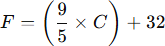
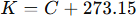
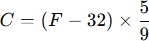
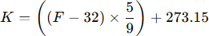
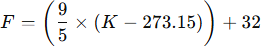
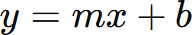

Descripción del Prototipo
Hemos analizado las ecuaciones que representan la eficiencia del dispositivo mediante gráficas que relacionan la temperatura máxima que puede llegar a alcanzar el dispositivo en función de la temperatura ambiente y la dispersión de calor aprovechando los rayos solares como principal fuente de energía evitando por completo la emisión de gases de efecto invernadero. Aplicamos fórmulas geométricas, termodinámicas y físicas (las que no aparezcan aquí estarán en el área de física) para maximizar la captación de calor, permitiendo ajustar el prototipo para mejorar su rendimiento, asegurando que pueda funcionar de manera efectiva en diferentes condiciones climáticas y horarios del día, siempre y cuando se conserven ciertas condiciones necesarias para su funcionamiento.
Gráfica de Reflexión del Calor
La luz del sol y cualquier otra se reflejan según la ley de la reflexión. Si se encuentra con un material reflector en un ángulo de 20 grados, significa que también saldrá de él con el mismo ángulo hacia la dirección contraria, lo que facilita dirigir el calor hacia la olla.
{kind=link}
Funcionamiento del Dispositivo
Aprovechamos un día soleado y ubicamos la estufa mirando directo hacia el sol, asegurando todo bien para evitar cualquier movimiento que nos impida disfrutar al 100% nuestra estufa y comida. Una vez calibrado, las láminas de aluminio reflejan el calor y luz del sol directo hacia la olla, lo que genera acumulación de calor. Con buenas condiciones, podemos hervir agua.
{kind=link}
Aumento del Calor
Cuando dirigimos todo el calor hacia la olla, la temperatura empieza a aumentar. La distribución de la temperatura no es uniforme, sino que presenta un pico de calor en el costado inferior donde se encuentran los reflectores, disminuyendo hacia las zonas de la tapa.
.png){kind=link}
La relación entre las diferentes medidas de temperaturas
Ahora vamos a analizar y mostrar las diferentes unidades de medidas y su relación entre sí las cuales son Celsius a Fahrenheit y viceversa, Celsius a Kelvin y viceversa, Fahrenheit a Kelvin y viceversa, estas medidas son muy importantes para el funcionamiento de nuestra cocina para de esta forma saber el funcionamiento adecuado en cada unidad de medida.
De celsius a fahrenheit
De celsius a Kelvin
De fahrenheit a celsius
De fahrenheit a Kelvin
De Kelvin a celsius
De Kelvin a fahrenheit
Estas son la relación que tienen entre sí las unidades de medidas. Estas unidades y sus fórmulas de conversión entre las escalas de temperatura (Celsius, Fahrenheit y Kelvin) son funciones lineales. Esto significa que las ecuaciones tienen la forma general:
Gráfica de las funciones lineales de cada medida de temperatura
A continuación vamos a ver las gráficas de estas funciones Fahrenheit y Kelvin, en donde se dependa de la escala en Celsius, de esta forma lograr entender mejor las funciones lineales de cada medida de temperatura y su cambio a grados celsius.
Uso de energías renovables de nuestro prototipo con temperatura y medidas
A continuación mostraremos las energías renovables de nuestro prototipo con sus medidas y temperatura:
El prototipo a realizar es un dispositivo de cocina solar parabólico a base de una sombrilla, un elemento fijador, ya sea una base metálica o varias cuerdas con estacas ancladas al suelo para más versatilidad en terrenos no planos como pasto, arena o tierra, por supuesto un material reflector ya sean láminas de aluminio o papel aluminio según las preferencias y presupuesto, consta de una segunda base metálica al interior de la parábola la cual cumplirá la misión de sostener la olla, olla que debe ser de color negro para absorber el calor con mayor eficiencia.
Ya dicho lo anterior, existe cierta ambigüedad a la hora de establecer una temperatura máxima, debido a que depende de varias condiciones ambientales como: la temperatura ambiente, radiación solar, humedad del aire, etc. En condiciones controladas, con un día soleado y una temperatura de 35 grados Celsius el dispositivo alcanzó una temperatura que oscila entre los 85 y 150 grados Celsius en el foco de la parábola. Cabe mencionar que la temperatura no está distribuida de forma uniforme y tiene picos más altos en temperatura cerca del foco de la parábola.
{kind=link}